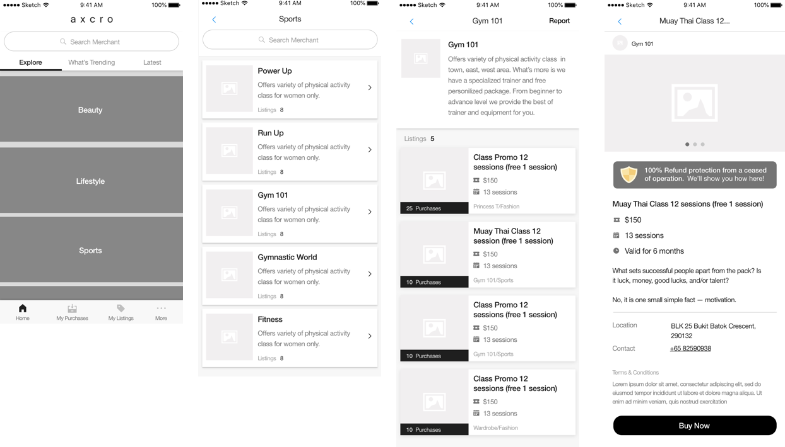

Bridging Trust Between Customer and Small Businesses 💆
How might we build consumer's confidence on purchasing small businesse services in packages?
Background
Axcro is a shopping platform that provides a protection from any business closure. The idea is to help small businesses or freelancers to increase their sales and create recurring regular customers flow. Axcro came in by managing the customer-merchant payment transactions. Worked directly with stakeholders, the team consisted of myself, a project manager, and developers.
My role
Wireframe, Prototype, UI Design, Logo Design, Art Direction.
The approach
What to understand
Method
As a new platform and services are from small business, we starts our initial users from the merchant’s existing cusomters. The plan was to roll-out the main transaction feature and to browse other packages. The first step I did was a heuristic evaluatios between a few e-commerce platforms and look for patterns that can be used for our potential users.
Some common user behavior from daily lives observation:
Wireframe
We present and discuss wireframe together with the stakeholders, show our findings, and went through some feedback sessions.
Look and feel
After we had conclusion on the final wireframe, time to add some styling onto the screes. We went for a simple, trust look and feel for this product.
View Prototype